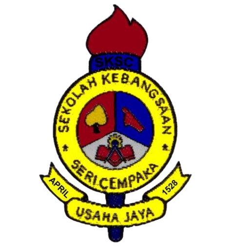
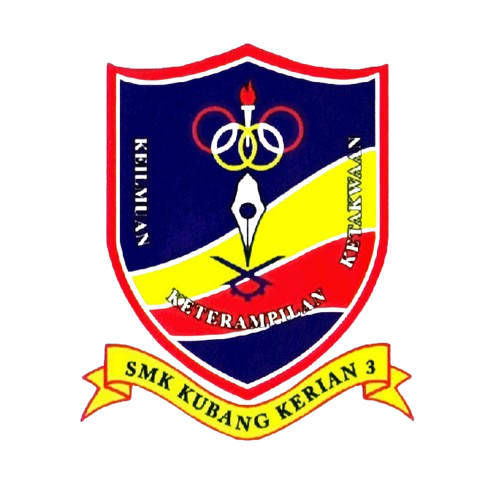

Education
Tadika Kemas
When I was in kindergarten, I was very happy because I could play and learn with my friends. Every morning, we sang children's songs before learning to recognize letters and numbers. Our teacher was very kind and always praised us when we answered correctly. Break time was the time I looked forward to the most because I could eat the lunch I brought from home and play on the swings in the playground. The experience in kindergarten was very fun and became a sweet memory that I will never forget.
Sekolah Kebangsaan Seri Chempaka
 My experience at Sekolah Kebangsaan Seri Chempaka was very meaningful and full of beautiful memories. I studied diligently with my friends and received guidance from dedicated teachers. During grade six, I worked hard to face the UPKK and UPSR exams. As a result, I managed to obtain excellent results in UPKK with 7A 1B and in UPSR I got 4A 2B. This success made me feel proud and more enthusiastic to continue studying harder in the future.
Sekolah Menengah Kebangsaan Kubang Kerian 3
 My experience at Sekolah Kebangsaan Seri Chempaka was very meaningful and full of beautiful memories. I studied diligently with my friends and received guidance from dedicated teachers. During grade six, I worked hard to face the UPKK and UPSR exams. As a result, I managed to obtain excellent results in UPKK with 7A 1B and in UPSR I got 4A 2B. This success made me feel proud and more enthusiastic to continue studying harder in the future.
Universiti Teknologi Mara Machang
 My experience during the five semesters at UiTM Machang in the Information Management department was very valuable and full of many sweet memories and challenges. I learned many new things related to information technology, data management, as well as communication and leadership skills. The lecturers here were very helpful and always encouraged me to continue to progress. In addition to learning in the classroom, I also actively participated in co-curricular activities and faculty programs that enriched my experience as a student. Although the assignments and exams were sometimes challenging, the support from my friends and the desire to succeed made me keep trying. These five semesters have shaped me into a more independent, disciplined student, and prepared to face the world of work.
My experience during the five semesters at UiTM Machang in the Information Management department was very valuable and full of many sweet memories and challenges. I learned many new things related to information technology, data management, as well as communication and leadership skills. The lecturers here were very helpful and always encouraged me to continue to progress. In addition to learning in the classroom, I also actively participated in co-curricular activities and faculty programs that enriched my experience as a student. Although the assignments and exams were sometimes challenging, the support from my friends and the desire to succeed made me keep trying. These five semesters have shaped me into a more independent, disciplined student, and prepared to face the world of work.